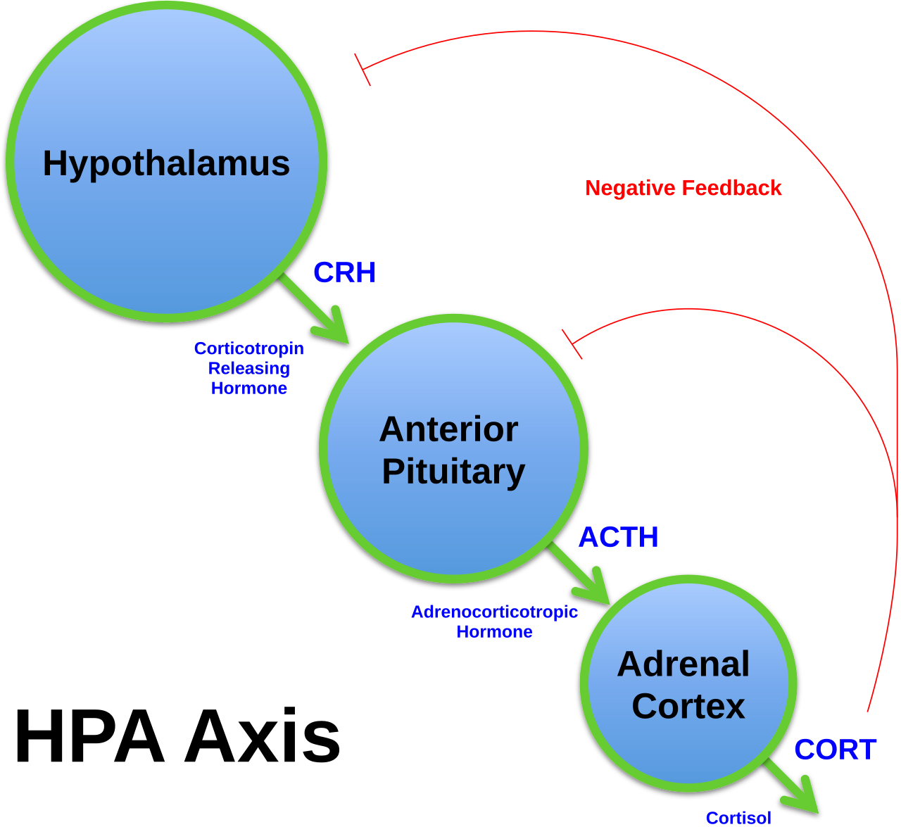

Nghịch Lý Thần Kinh: "Point and Shoot" (Phó Giao Cảm & Giao Cảm)
Trong sinh lý học thần kinh, hoạt động tình dục nam giới được ghi nhớ bằng câu thần chú kinh điển: "Point and Shoot" (Chỉ và Bắn): - "Point" (Cương Cứng): Được điều khiển độc quyền bởi hệ thần kinh Phó Giao Cảm (Parasympathetic). Hệ này chỉ hoạt động khi bạn cảm thấy an toàn, thư thái, bình tâm và tin tưởng đối tác. Khi đó, các dây thần kinh chậu mới giải phóng Nitric Oxide làm giãn nở mạch máu thể hang. - "Shoot" (Xuất Tinh): Được điều khiển bởi hệ thần kinh Giao Cảm (Sympathetic)—chính là hệ phản ứng trước căng thẳng và nguy hiểm.
Khi bạn bước vào phòng ngủ với tâm trạng căng thẳng, lo âu về công việc hoặc nỗi sợ "mình có làm đối tác thất vọng không?", hạch hạnh nhân (Amygdala) sẽ phát tín hiệu báo động đỏ, kích hoạt cường giao cảm (Sympathetic Overdrive): - Hormone Adrenaline và Noradrenaline được bơm ồ ạt vào máu. - Các thụ thể α₁-adrenergic tại tiểu động mạch thể hang bị kích hoạt mạnh mẽ, gây co thắt mạch máu hang tức thì. Dòng máu bị chặn lại, áp lực xìu xuống ngay lập tức. - Nếu không xìu hoàn toàn, cường giao cảm sẽ kích hoạt sớm trung tâm xuất tinh tại tủy sống L1–L2, dẫn đến hiện tượng xuất tinh sớm do lo âu.

Trục HPA vs Trục HPTA: Cuộc Chiến Giữa Cortisol & Testosterone
Ở cấp độ nội tiết tố, cơ thể duy trì hai trục chỉ huy quyền lực: 1. Trục HPA (Hạ đồi - Tuyến yên - Tuyến thượng thận): Tiết hormone giải phóng Corticotropin (CRH), kích thích ACTH và giải phóng Cortisol để đối phó stress. 2. Trục HPTA (Hạ đồi - Tuyến yên - Tinh hoàn): Tiết GnRH, kích thích LH và giải phóng Testosterone để duy trì sinh sản và thể lực.
Nghiên cứu từ Chrousos et al. (Nature Reviews Endocrinology) đã làm sáng tỏ: CRH và Cortisol ức chế trực tiếp tế bào thần kinh GnRH tại vùng dưới đồi. Khi Cortisol tăng cao trong máu mãn tính: - Tuyến yên ngừng tiết LH. - Tế bào Leydig bị tê liệt khả năng sản sinh Testosterone. - Tỷ lệ Cortisol : Testosterone bị đảo ngược, đẩy cơ thể vào trạng thái dị hóa (Catabolic state), làm sụp đổ ham muốn tình dục và gây rối loạn cương kéo dài.
Vòng Lặp Hiệu Suất Tàn Phá (The Performance Anxiety Trap)
Tâm lý lo âu hiệu suất thường vận hành theo một vòng xoắn bệnh lý khép kín: 1. Sự cố ngẫu nhiên: Một đêm mệt mỏi hoặc uống rượu bia khiến bạn bị xìu giữa chừng. 2. Kỳ vọng tiêu cực: Ở lần quan hệ tiếp theo, bạn không tập trung vào cảm giác khoái cảm mà bắt đầu đóng vai "khán giả tự phán xét" (Spectatoring), liên tục tự hỏi: "Nó đã cứng chưa? Nó có xìu lại không?". 3. Kích hoạt giao cảm: Nỗi sợ phán xét làm tim đập nhanh, thở nông, bơm adrenaline vào máu. 4. Hậu quả lặp lại: Mạch máu hang co thắt và bạn lại bị xìu. 5. Củng cố niềm tin sai lầm: Bạn tin rằng mình "bị bệnh liệt dương", tạo nên vòng lặp stress nặng nề hơn ở những lần sau.
Giao Thức 4 Bước Hóa Giải Căng Thẳng Phòng The
- Nhịp Thở Sinh Lý "Physiological Sigh" Trước Khi Quan Hệ: Thực hiện 3–5 chu kỳ thở: Hít vào sâu 2 lần liên tiếp bằng mũi (1 hít dài + 1 hít ngắn bổ sung) → Thở ra từ từ bằng miệng kéo dài 6–8 giây. Đây là biện pháp nhanh nhất được chứng minh kích hoạt dây thần kinh phế vị, đưa nhịp tim hạ xuống và chuyển quyền điều khiển cho hệ phó giao cảm trong vòng 90 giây.
- Áp Dụng Kỹ Thuật "Tập Trung Cảm Giác" (Sensate Focus): Thống nhất với bạn đời trong 1–2 tuần chỉ âu yếm, vuốt ve, massage da thịt mà tuyệt đối không quan hệ xâm nhập. Khi áp lực "phải cương cứng" được gỡ bỏ 100%, hệ giao cảm sẽ tự động lắng xuống và sự cương cứng tự nhiên sẽ quay trở lại.
- Theo Dõi Chỉ Số Biến Thiên Nhịp Tim (HRV) Hàng Ngày: Khi HRV ở mức thấp và điểm Stress Score trên thiết bị đeo ở mức cao, hãy ưu tiên nghỉ ngơi, đi bộ hòa mình vào thiên nhiên hoặc ngâm nước ấm thay vì cố gắng quan hệ gượng ép.
- Bổ Sung 200–400mg L-Theanine & Ashwagandha: L-Theanine kích thích sóng não alpha tạo trạng thái tỉnh táo thư giãn, trong khi Ashwagandha hỗ trợ làm dịu trục HPA và hạ thấp cortisol nền.
Tài Liệu Tham Khảo & Nguồn Y Khoa
- Chrousos, G. P. (2009). Stress and disorders of the stress system. Nature Reviews Endocrinology, 5(7), 374–381. Tạp chí Nature (PMID: 19488073) ↗
- Bancroft, J., & Janssen, E. (2000). The dual control model of male sexual response: a theoretical approach to centrally mediated erectile dysfunction. Neuroscience & Biobehavioral Reviews. Tạp chí Neuroscience & Biobehavioral Reviews (PMID: 10704733) ↗
- Barlow, D. H. (1986). Causes of sexual dysfunction: the role of anxiety and cognitive interference. Journal of Consulting and Clinical Psychology, 54(2), 140–148. Báo Cáo Nghiên Cứu Gốc (NCBI PubMed: 3700800) ↗
- Rowland, D. L., et al. (2018). Performance anxiety in sexual dysfunctions: from physiology to therapy. Journal of Sexual Medicine, 15(6), 842–853. Báo Cáo Nghiên Cứu Gốc (NCBI PubMed: 29729867) ↗